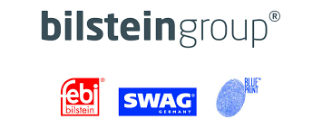

Key Operative July 2021 - May 2022
- Managing a team within the warehouse ensuring all orders are processed and dispatched within a strict time scale.
- Liaising with colleagues throughout the company to prioritise workloads and directing team members in their duties to reach targets whilst adhering to the highest health and safety standards.
- Dealing with staff queries and issues, administering both praise and disciplinary action where appropriate.
- Being entirely approachable to my own team as well as visitors on site to uphold the reputation of the company as well as maintaining a positive working environment.
- Talking to couriers via e-mail and telephone to manage bookings dependant on daily and future workloads.
- In my role as a key operative my proudest achievement was having the ability to mentor and coach my team, I had a strong focus on their physical and mental wellbeing to ensure they felt valued, in some cases liaising with HR to refer my guys to occupational therapy as well as changing their workload to meet their physical capabilities.
Operations Support Administrator: November 2020 - July 2021
- Building upon my knowledge of the warehouse procedures and Witron system I adjusted to work in the logistics office in a short space of time, the key responsibilities being a very strong attention to detail and ability to work well under the pressure of strict deadlines.
- Dealing with both couriers and customers means I have an approachable demeanour to ensure the company's respected image is upheld as well as keeping a good working relationship with clients.
- Interfacing internally throughout the company via the use of phones, email and face to face conversation is a key element of my day to day.
- Producing clear, highly accurate and prompt paperwork such as manifests, CMRs and dispatch notes is imperative to smooth working order of anything outbound especially when it comes to working on anything exported around the world.
Warehouse Operative: January 2020 - November 2020
- Working closely with my new colleagues to familiarise myself with the daily deadlines and procedures I was able to become a key member of the team.
- Working as part of the dispatch team suited my work style as I thrive when aiming for tight deadlines, applying my keen eye for detail to ensure loads were accurate and on time.
- Trained on the use of various manual handling equipment including large VNA trucks.
- Strong awareness of the importance of the use of correct PPE and adherence to health and safety protocols, allowing for efficient and safe day to day operations.